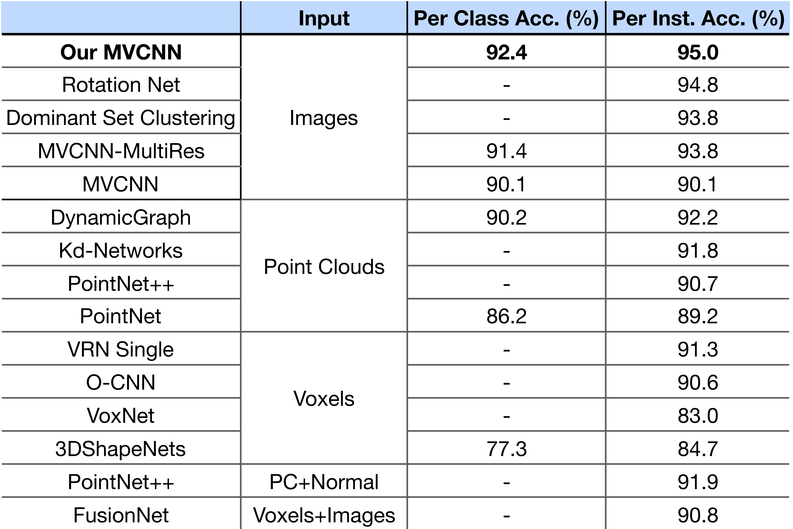
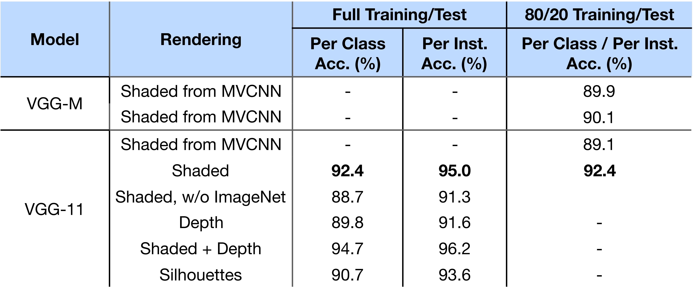

A Deeper Look at 3D Shape Classifiers
People
Abstract
We investigate the role of representations and architectures for classifying 3D shapes in terms of their computational efficiency, generalization, and robustness to adversarial transformations. By varying the number of training examples and employing cross-modal transfer learning we study the role of initialization of existing deep architectures for 3D shape classification. Our analysis shows that multiview methods continue to offer the best generalization even without pretraining on large labeled image datasets, and even when trained on simplified inputs such as binary silhouettes. Furthermore, the performance of voxel-based 3D convolutional networks and point-based architectures can be improved via cross-modal transfer from image representations. Finally, we analyze the robustness of 3D shape classifiers to adversarial transformations and present a novel approach for generating adversarial perturbations of a 3D shape for multiview classifiers using a differentiable renderer. We find that point-based networks are more robust to point position perturbations while voxel-based and multiview networks are easily fooled with the addition of imperceptible noise to the input.
Publication
A Deeper Look at 3D Shape Classifiers,Jong-Chyi Su, Matheus Gahelda, Rui Wang, and Subhransu Maji
Second Workshop on 3D Reconstruction Meets Semantics, ECCV, 2018
pdf, arXiv, bibtex, poster
Dataset and Source Code
Blender script for rendering shaded images
Blender script for rendering depth images
Effect of Shape Rendering
Learning with Few Examples
Cross Model Distillation